주식회사 아라드 네트웍스
Our businesses
사업분야 선택
01Protection
Isolate AI
기기와 네트워크의 보호
살펴보기02Utilisation
Accelerate AI
AI 연산 자원의 효율적인 활용
살펴보기03Connectivity
Connect AI
AI가 필요한 현장의 연결
살펴보기ARAD Networks연결에서 시작되는 가능성

주식회사 아라드 네트웍스
Our businesses
기기와 네트워크의 보호
살펴보기AI 연산 자원의 효율적인 활용
살펴보기AI가 필요한 현장의 연결
살펴보기